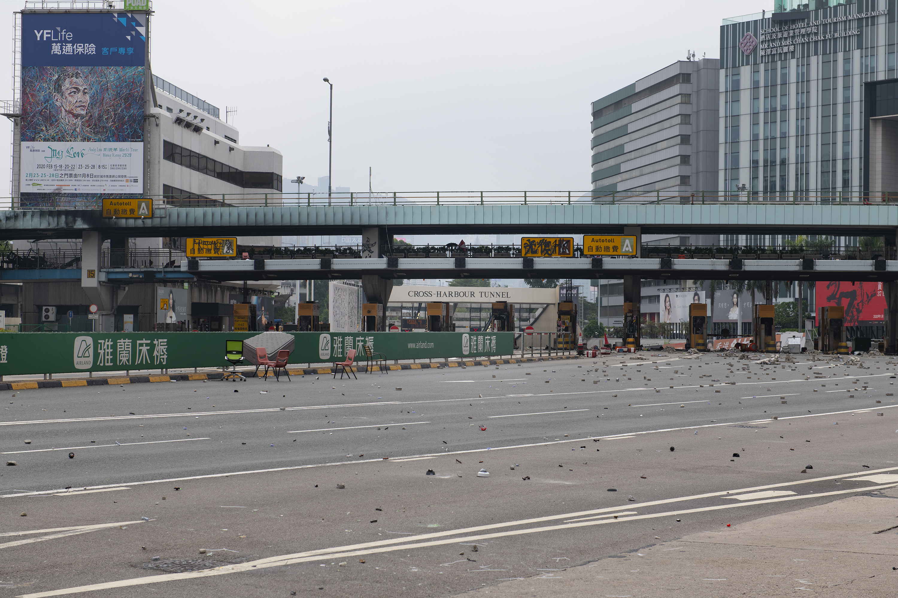
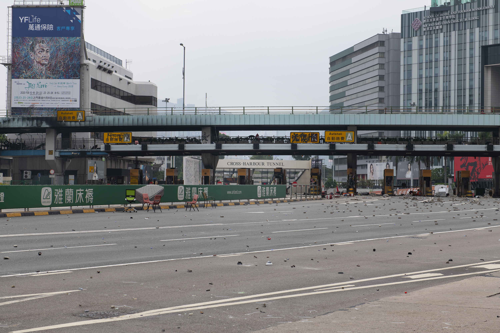
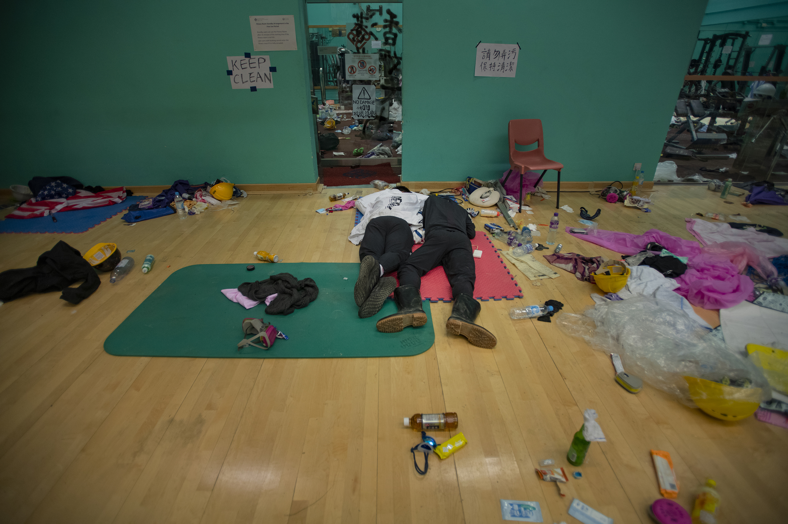
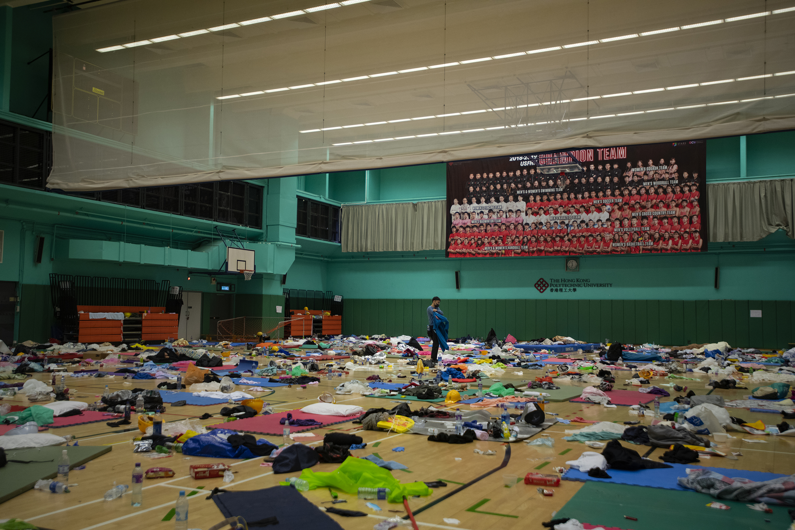
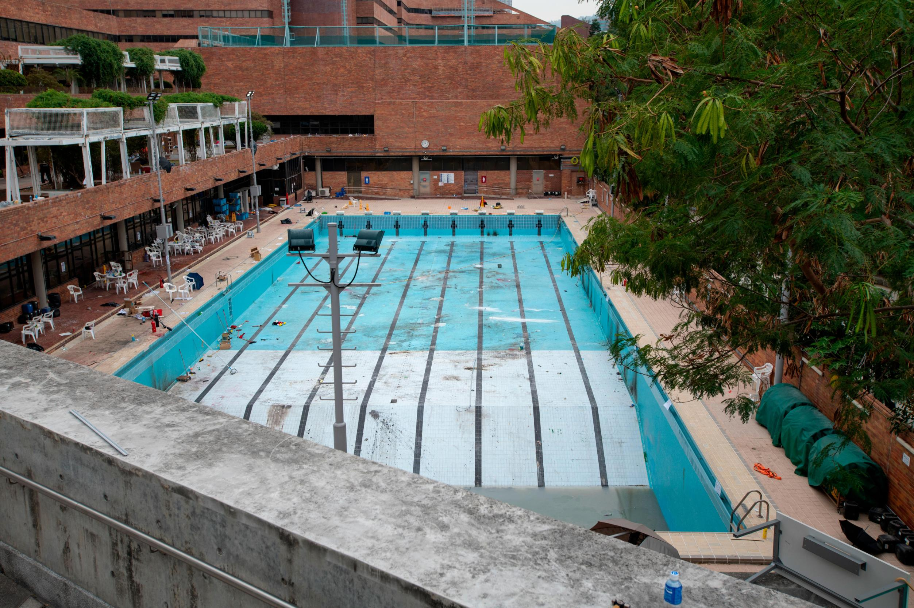
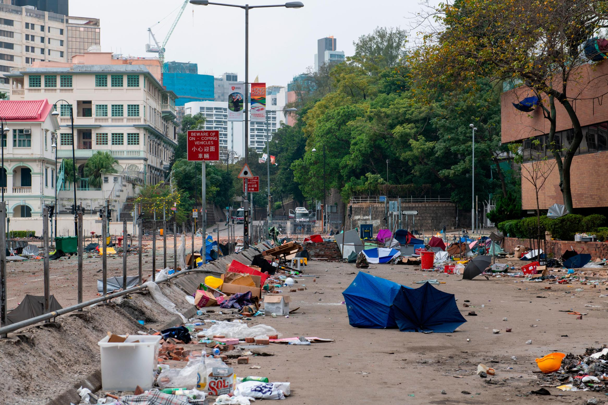
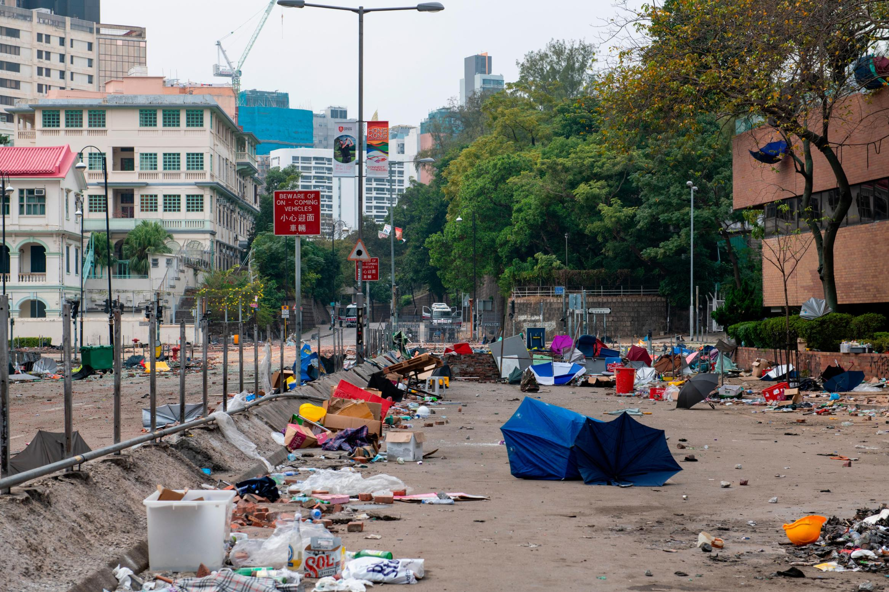

Published: 2019-11-19 16:52:43+00:00; modified: 2019-11-20 08:43:20+00:00
 One of the main entrances to Hong Kong’s Polytechnic University as seen Tuesday morning.
One of the main entrances to Hong Kong’s Polytechnic University as seen Tuesday morning.  Charred remains of the PolyU campus are seen near the Cross-Harbour Tunnel.
Charred remains of the PolyU campus are seen near the Cross-Harbour Tunnel.  Piles of unused bottles of petrol bombs are seen near one of the entrances to the university.
Piles of unused bottles of petrol bombs are seen near one of the entrances to the university.  Graffiti is seen at the entrance of the canteen, which became something of a headquarters for protesters at PolyU.
Graffiti is seen at the entrance of the canteen, which became something of a headquarters for protesters at PolyU.  A statue near the entrance to the canteen and gymnasium is seen decked out in attire typical of Hong Kong’s protesters.  The entrance to the Cross-Harbour Tunnel, one of three tunnels connecting Hong Kong Island to Kowloon. The roadway is usually among the city’s most packed.
A statue near the entrance to the canteen and gymnasium is seen decked out in attire typical of Hong Kong’s protesters.  The entrance to the Cross-Harbour Tunnel, one of three tunnels connecting Hong Kong Island to Kowloon. The roadway is usually among the city’s most packed.  A view of the hose used by protesters to sneak out of PolyU. The normally bustling roads were abandoned Tuesday morning.
A view of the hose used by protesters to sneak out of PolyU. The normally bustling roads were abandoned Tuesday morning.  Items from a nearby library were piled up and used as barriers.
Items from a nearby library were piled up and used as barriers.
 Protesters sleep inside the gymnasium.  The nearly-empty gymnasium.  A pool that was emptied and used for petrol bomb practice by protesters is seen Tuesday.  Protester appear to search for a way to leave PolyU without being caught by police.
Protester appear to search for a way to leave PolyU without being caught by police.  An area near the entrance of PolyU is seen Tuesday.
An area near the entrance of PolyU is seen Tuesday.  A Starbucks on the PolyU campus was heavily vandalized, as were others near the school. The coffee chain is regularly targeted by protesters because the family that owns Maxim’s, which owns the Starbucks franchise in Hong Kong, has criticized protesters and supported police.
A Starbucks on the PolyU campus was heavily vandalized, as were others near the school. The coffee chain is regularly targeted by protesters because the family that owns Maxim’s, which owns the Starbucks franchise in Hong Kong, has criticized protesters and supported police.  Protesters are seen running through the center of the PolyU campus.  One of the streets near Hong Kong Polytechnic University is seen filled with detritus Tuesday.
Protesters are seen running through the center of the PolyU campus.  One of the streets near Hong Kong Polytechnic University is seen filled with detritus Tuesday.
Hong Kong (CNN)
Last week, thousands of student protesters streamed into Hong Kong Polytechnic University and occupied the campus as the city’s violent political unrest reached fever pitch.
Once inside, they soon faced an impossible choice: stay inside until supplies run out, or leave the university and risk getting tear gassed and arrested for rioting, a charge which can fetch a 10-year prison sentence.
Police accused protesters of turning PolyU and other universities into “weapons factories” that “look like military training grounds” and surrounded the campus.
Police have been on the edge of the campus for more than three days, firing round after round of tear gas at protesters who responded with makeshift petrol bombs, catapults and bows and arrows.
Hundreds of protesters were trapped, but some slowly managed to get out. Authorities said they had processed 1,100 people – 600 of whom left willingly. Protesters were arrested if they were older than 18 or registered and then released if they were minors, police said.
As of Wednesday afternoon, a small number still remained, as parents, school staff and local politicians attempted to negotiate their surrender.
A slow surrender has been ongoing since Tuesday, when the violence subsided, with the campus was in ruins.
Atop one of the campus’ entrances, there was a noticeable stench of smoldering rubbish and petrol that burned the nose.
Thousands of unused petrol bombs littered the campus on the path to the canteen, which had become something of a main headquarters for the protesters.
Only about 50 or so protesters were inside when CNN visited. Some slept while others looked aimlessly at their phones.
An 18-year-old in a black ski mask sat beside the entrance. Only his eyes were visible on his face. His hands appeared to have fresh cuts on them.
As of Tuesday, fewer people were on the streets outside and the number of protesters inside were dwindling.
Protesters have been holed up at the PolyU campus since last week, after an escalation in the months-long unrest that saw multiple universities across the city fortified and turned into temporary protest camps. They had used the PolyU campus as a base from which they launched operations to block nearby roads and the Cross-Harbour Tunnel which connects Kowloon to Hong Kong Island.
By Tuesday, police had surrounded the school, and there didn’t appear to be a way out. A handful of desperate protesters took to shimmying down a rope from a bridge and getting away on motorcycles.
The teen in the canteen said he had barely slept because of fears that police could storm the campus at any moment.
“I’m definitely very tired,” he said. “I’m trying my best to look for a way out. Even though I know that the chance of (finding) a safe way out exists less and less by the second.”
The teenager, like all those who spoke to CNN, declined to give his real name or have his photograph taken because he feared being identified and arrested by police.
Across the hall from the canteen, protesters had turned the gymnasium into a dormitory, despite the fact that an alarm was going off. Several people were still sleeping there at about 11:30 in the morning when CNN visited, Tuesday.
Back outside, groups of roving protesters looked for exits near the Jockey Club Innovation Tower, an impressive piece of architecture designed by Zaha Hadid. Several tried to jump across a highway near the pool, which had been emptied and used for Molotov cocktail-throwing practice. Protesters have justified this type of violence as proportional and meant to keep police at bay, but authorities say their actions are dangerous and potentially deadly.
One of those looking out was a surgeon who identified himself as Dr. Chiu. Chiu had come as part of a group of first aid volunteers two days earlier, and said he treated some pretty serious wounds – lacerations deep enough to see the muscles, broken ribs and a fractured arm among them.
The less-experienced volunteers working with him struggled to cope at times. “I saw a lot of other first-aiders and other students, kids – they’re all crying,” Chiu said.
He paused, took a deep breath and continued: He said had hoped that this generation of young people could have avoided this experience.
“They shouldn’t bear this kind of responsibility.”
But Chiu also said it was important to empathize with Hong Kong’s police force, which has been criticized for alleged police brutality over the course of the city’s almost six months of protests.
“They have been working under a lot of pressure these months,” Chiu said.
Chiu then went off and looked for an exit. Trailing a few hundred meters behind were a group of three girls, including a 14-year-old who wouldn’t give us her real name, but wanted to be called “Hannah.”
Hannah said she came to defend not just PolyU, but the city and its freedom. She said she feels it’s important for young people to fight for their freedoms and a democratic system.
“I know it’s tough for everyone, and for us too. But faced with the authoritarian government, we can’t be afraid. We have to go on,” Hannah said.
Hannah explained that the situation hasn’t been easy.
Like everyone else on campus during the protest occupation, sleep for Hannah has been hard to come by. She said Monday morning – when police fired numerous rounds of tear gas in a bid to clear the campus – was particularly tough, because they were not fully prepared for their encounter with police.
Hannah said she’s a been a regular at protests since they began happening frequently back in June.
She usually is tasked with either neutralizing tear gas canisters fired by police or throwing them back at authorities.
“We have been here for over 48 hours now. It’s very very tough for us, but we are worried that police might raid the campus. So we stay here and wait for rescue.”
Hannah said that her mother was among the group of parents who had gathered near the university for a sit-in, requesting that police let the student-protesters inside the university leave without fear of arrest or harm.
CNN’s Isaac Yee, Chermaine Lee and James Griffiths contributed to this report